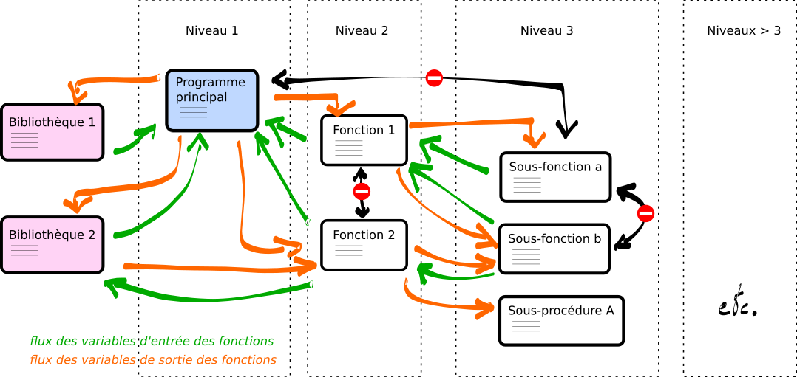

Programmation modulaire#
Le “bon” programme et le “mauvais” programme#
Un “bon” programme est un programme modulaire. Et un programme modulaire, qu’est-ce que c’est ? A. Braquelaire (U. Bordeaux) définit les cinq objectifs suivants :
Lisibilité : facilité à comprendre le comportement et la mise en œuvre d’un programme à partir de son code source.
Maintenabilité : facilité à détecter des fautes de programmation et à les corriger sans en introduire de nouvelles.
Portabilité : facilité à adapter toutes les fonctionnalités d’un logiciel à un nouvel environnement.
Extensibilité : ossibilité de modifier l’implémentation d’une partie du programme ou de lui ajouter des fonctionnalités sans que cela ne modilie le comportement de l’ensemble.
Réutilisabilité : possibilité d’assembler entre eux plusieurs portions de programme, écrites à des époques et pour des applications différentes, sans qu’aucune d’entre elles ne perturbe le comportement des autres.
Il s’agit donc de regrouper les fonctionnalités concourrant à un même traitement. Il existe 2 approches de regroupement qui s’opposent
“dirigée par le contrôle” : approche fonctionnelle descendante incompatibie avec la réutilisabilité et l’extensibilité
“dirigée par les données” : approche fonctionnelle ascendante favorable à la construction de composants logiciels autonomes (voir prog. par objet).
Si on décline ces approches dans le contexte du PH461 qui vise au développement d’outils d’analyse de données expérimentales, apparaissent les options suivantes. Partant du constat que des données doivent être lues, traitées puis représentées graphiquement, la méthode descendante consisterait à développer des fonctions de représentation pour chaque type de données en incluant les traitements associés aux différents cas de figure. Ainsi, les \(X(t)\) d’une acquisition temporelle pourraient très bien se trouvées dans un format différent (une liste par exemple) de celles d’une acquisition en fonction de la température \(X(T)\) (qui aurait le type d’un dictionnaire). Cela rendrait nécessaire d’écrire deux versions des fonctions de traitements et de représentation alors même que les opérations seraient communes à n’importe quelle fonction d’une seule variable \(f(x)\). A l’inverse la méthode ascendante impliquerait de commencer par développer pour chaque origine de données (et donc chaque format de fichier de données) une fonction qui chargerait les données en mémoire dans un format particulier et toutes les fonctions de traitement seraient compatibles avec ce format (par exemple des listes). C’est l’approche ascendante qui est compatible avec la programmation modulaire.
Métaphore de l’échaffaudage#
Comme un programme informatique, un échaffaudage est un outil visant à mettre un ouvrage à portée de main de celui ou celle en charge de l’exécuter dans un environnement de travail robuste (utile en toutes. circonstances) et fiable (sans introduire de risques). En toute rigueur, un échaffaudage construit sur mesure et avec une finition soignée offrirait les mêmes fonctionnalités qu’une structure métallique mais pour un coût global exhorbitant (en temps, savoir-faire, matériaux, énergie, etc.). Ce serait d’ailleurs absurde d’apporter le même soin à l’échaffaudage provisoire qu’au bâtiment permanent.
L’enjeu est donc de réduire le coût de l’échaffaudage et en premier, de le rendre réutilisable. Pour s’adapter à toutes formes et dimensions de bâtiments (extensibilité), il doit être décomposé en éléments assez petits . La conception de ces pièces élémentaires doit faciliter
la manipulation aisée sans qu’une formation lourde ne soit nécessaire (lisibilité),
le remplacement des pièces défectueuses ou les mises aux normes successives (maintenabilité),
l’installation dans des environnements variés (terrains en pente, accidentés, suspendu plutôt que posé sur le sol, etc. (portabilité)
La méthode descendante consisterait à donner la priorité à une fonctionnalité, par exemple établir une station de travail à 5 m du sol, au détriment de l’assemblage des pièces de la structure. Une plateforme d’un seul tenant reposant sur des poutres de chêne atteindrait efficacement l’objectif; en contrepartie, s’il s’avérait souhaitable d’ajouter un étage à 10 m du sol, une stratégie totalement différente devrait alors être mise en œuvre (pour des raisons de poids, de manipulation, de stabilité, etc.), ce qui est communément appeler faire du bricolage. La méthode ascendante au contraire donne la priorité à l’assemblage simples d’éléments versatiles, conduisant à concevoir la structure finale comme l’assemblage de multiples sous-structures.
La difficulté, et donc la plus-value du concepteur ou de la conceptrice, est de trouver un équilibre entre la versatilité des modules d’une part et le coût global de la conception d’autre part. Il est souvent inutile d’ajuster l’échaffaudage aux dimensions du bâtiment permanent à mieux que quelques dizaines de centimètres de sorte que les pièces n’ont pas besoin d’être réduite à moins d’un mètre. C’est à cette échelle qu’il est efficace de renouveler les stratégies de mise en œuvre, c’est-à-dire de bricoler.
Réfection du pavillon Panhard du campus de Versailles de l’Université Paris-Saclay, le 16 mai 2023 |
Principes fondamentaux de la modularité#
1. “Abstraction des littéraux”#
Toute grandeur constante dans un programme donné est susceptible de prendre une autre valeur dans une réutilisation future. L’abstraction des littéraux consiste à déclarer une variable pour toutes les constantes d’un programme.
exemple 1
mauvaise pratique :
bonne pratique :
annee_complete = 2000 + annee
annee0 = 2000
annee_complete = annee0 + annee
exemple 2
mauvaise pratique :
bonne pratique :
open (‘/home/mon_repertoire/mon_fichier.dat’)
path = ‘/home/mon_repertoire/’
file = ‘mon_fichier.dat’
open (path + file)
2. “Factorisation du code”#
Le but est d’éviter les duplications de code qui entrave la maintenabilité et l’extensibilité puisque les corrections et les adaptations doivent être autant dupliquées que le code se trouve l’être.
Exemple 1 : représentation d’un nombre complexe#
On souhaite afficher un nombre complexe sous sa forme cartésiène :
import numpy as np
z = 1+2j
print (f'{np.real(z):.1f} + {np.imag(z):.1f}i')
1.0 + 2.0i
Imaginons que dans un autre contexte, il soit nécessaire de remplacer le symbole \(i\) du nombre imaginaire par \(j\), il faudrait modifier toutes les instructions d’affichage. Pour éviter cela, la chaîne de caractère à afficher doit être définie dans une fonction.
def affiche_complexe (z, symbol = 'i'):
return f'{np.real(z):.1f} + {np.imag(z):.1f}' + symbol
print (affiche_complexe (1+2j, 'i'))
print (affiche_complexe (1+2j, 'j'))
print (affiche_complexe (1+2j, '◎'))
1.0 + 2.0i
1.0 + 2.0j
1.0 + 2.0◎
Exemple 2 : représentation d’un résultat de mesure#
Le résultat d’une expérience se représente dans la notation scientifique et associe la valeur moyenne de la mesure, l’incertitude de mesure et l’unité de la grandeur mesurée :
# données expérimentales
X = 1.234e-6
Delta_X = 0.056e-6
unit = 'm'
# affichage du résultat de mesure
exp = -6
odg = 10**exp
print (f'X = ({X/odg:.3f} ± {Delta_X/odg:.3f}) 10^({exp:d}) ' + unit)
X = (1.234 ± 0.056) 10^(-6) m
Cette manière de faire est fonctionnelle mais ne respecte pas les principes de modularité. Si dans un usage ultérieur, on souhaitait représenter un résultat ayant un chiffre significatif supplémentaire :
il serait nécessaire de dupliquer le code et de modifier le format d’affichage des variables réelles, en plus du nom de la grandeur.
# données expérimentales
Y = 1.2345e-6
Delta_Y = 0.0056e-6
unit = 'm'
# affichage du résultat de mesure
exp = -6
odg = 10**exp
print (f'Y = ({Y/odg:.4f} ± {Delta_Y/odg:.4f}) 10^({exp:d}) ' + unit)
Y = (1.2345 ± 0.0056) 10^(-6) m
Pour éviter cela, et rendre possible l’application du code pour des contextes variés, la décomposition du travail en fonctions et sous-fonctions est nécessaire.
3. “Masquage de l’implémentation”#
Les traitements opérés par une fonction ne doivent pas avoir de répercussions dans le reste du programme, en dehors du résultat fourni en sortie. Il ne doit pas être nécessaire de connaître la façon dont le traitement est mené, i.e. l’implémentation de la fonction, pour utiliser la fonction. C’est le sens du terme de masquage d’implémentation. Autrement dit, les fonctions et sous-fonctions d’un projet doivent être conçues de telle sorte qu’elles puissent être appelées à plusieurs endroits du code et par des fonctions à différents niveaux hierarchiques (e.g. à la fois par une sous-fonction et une sous-sous-fonction).
Pour autant, il faut garder à l’esprit que même si l’implémentation des fonctions doit permettre d’appeler n’importe quelle fonction depuis n’importe où, il convient de ne jamais appeler n’importe quelle fonction depuis n’importe où pour ne pas nuire à la structuration du programme. De fait, la structuration précède l’implémentation. En d’autres termes,
la structuration du programme détermine les niveaux hierarchiques qu’occupent les fonctions et sous-fonctions,
le masquage de l’implémntation détermine le flux des données entre les fonctions et sous-fonctions définies lors de la structuration.
